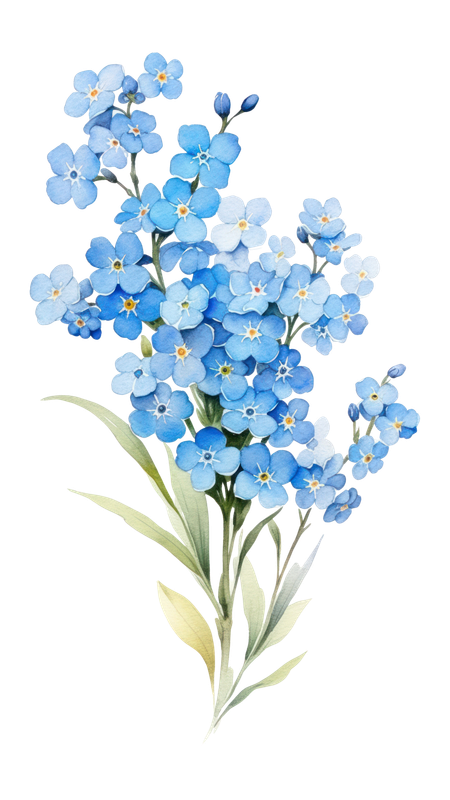
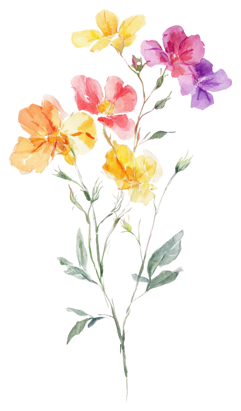
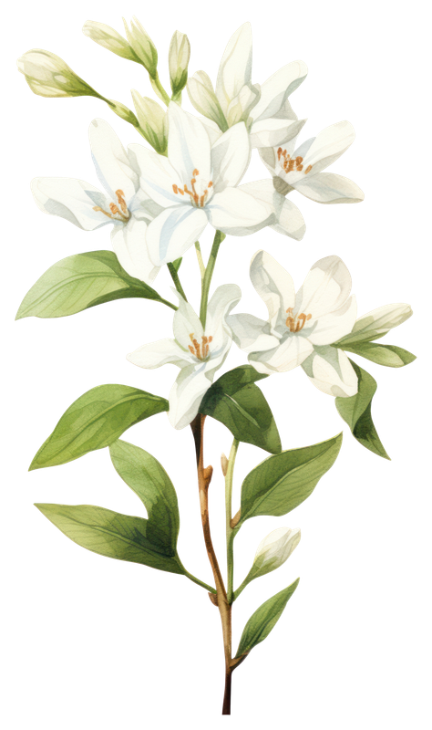
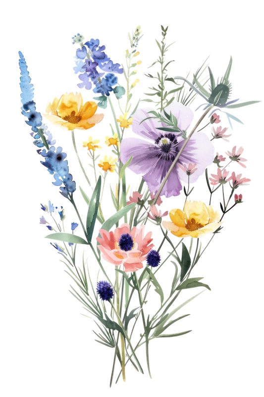

Choose a Flower to Send

Symbolizes calm, introspection, and longing

Represents purity, peace, and new beginnings.

Symbolizes freedom, resilience, and natural beauty.

Conveys joy, friendship, and admiration
"Where flowers bloom, so does hope."— Lady Bird Johnson
Want a larger collection of flowers?
Click the button on the side for more!